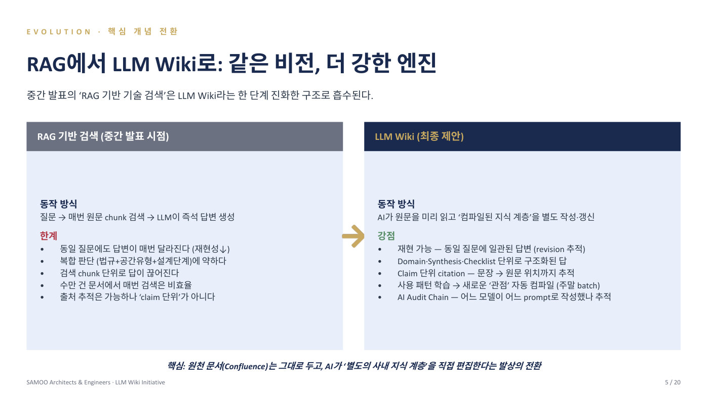

삼우종합건축사무소는 올해 창립 50주년을 맞은 건축 설계 회사다. 그동안 쌓인 예산서, 시방서(공사 방법을 적은 문서), 준공 문서가 72.5TB, 건수로 2천만 건에 이르는데, 오래된 자료 창고는 찾기도 어려우면서 유지 관리비만 연 2억 원 가까이 들었다. 그래서 먼저 RAG(질문을 받을 때마다 AI가 문서를 검색해서 답을 만드는 방식)를 6개월간 운영해 봤는데 결과는 냉정했다. 건축 설계 문서는 프로젝트마다 구성이 비슷해서 '피난 동선' 같은 키워드를 검색하면 비슷한 문서가 100개씩 쏟아졌고, AI가 그중 아무거나 골라 쓰다 보니 같은 질문에도 매번 다른 답이 나왔다. 검색과 요약을 반복하느라 AI 사용료도 절감 효과를 넘어섰다.
발표자는 발상을 바꿨다. 질문이 올 때마다 검색하는 대신, AI가 미리 원본 문서를 읽고 잘 정리된 백과사전(LLM Wiki)을 별도로 써 두게 한 것이다. 원본 문서는 절대 고치지 못하게 잠가 두고, AI는 주말 같은 한가한 시간에 피난·방화·주차 같은 주제별 정리 페이지와 실무 체크리스트를 만들어 계속 갱신한다. 질문이 오면 백과사전에서 먼저 찾고, 없을 때만 기존 RAG 검색으로 넘어간다. 2천만 건을 전부 정리하는 것이 아니라 자주 쓰이는 0.025~0.25%만 골라 페이지로 만들고, 직원들의 사용 패턴에 따라 정리 우선순위가 자동으로 바뀐다. 보안도 처음부터 설계했다. 삼성전자 반도체처럼 자료 반출을 금지하는 고객 데이터는 외부 AI에 보내지 않고 사내 GPU 서버 3대에서 Llama, Qwen 같은 공개 모델로만 처리하며, 부서·팀·개인별 열람 권한에 따라 검색 결과 자체가 걸러진다.
"지하 주차장 피난 계단 검토 때 뭘 봐야 하나"라고 물으면 체크리스트 페이지가 나오고, 각 항목이 건축법 시행령 PDF의 몇 페이지, 사내 지침의 몇 번째 문단에서 왔는지까지 추적된다. 선배 건축사는 의심되는 항목만 원문 클릭 한 번으로 확인하면 된다. 어느 AI 모델이 어떤 원문을 보고 답했는지 5단계로 기록되기 때문에, 2026년 1월 시행된 AI 기본법(AI 사용의 투명성과 책임을 요구하는 법)에도 대응할 수 있다. 3년간 총비용 약 5.4~7.2억 원에 연 3.3억 원어치의 업무 시간 절약 효과를 기대하며, 올 상반기에 첫 버전을 완성해 하반기 사내 도입을 목표로 한다. 2028년에는 이 시스템을 다른 설계 회사에 파는 사업까지 구상하고 있다.